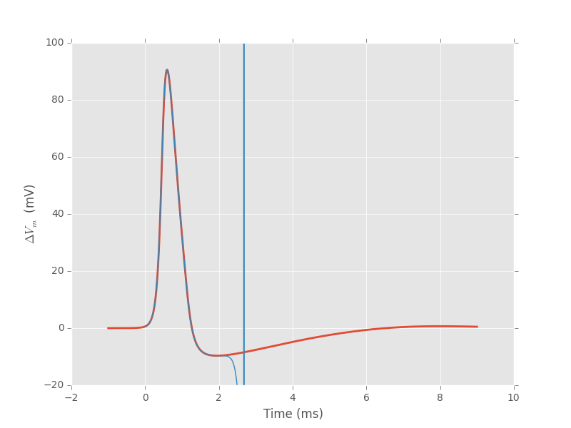
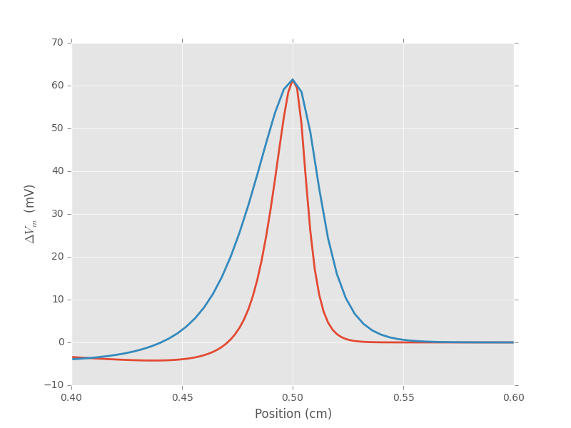
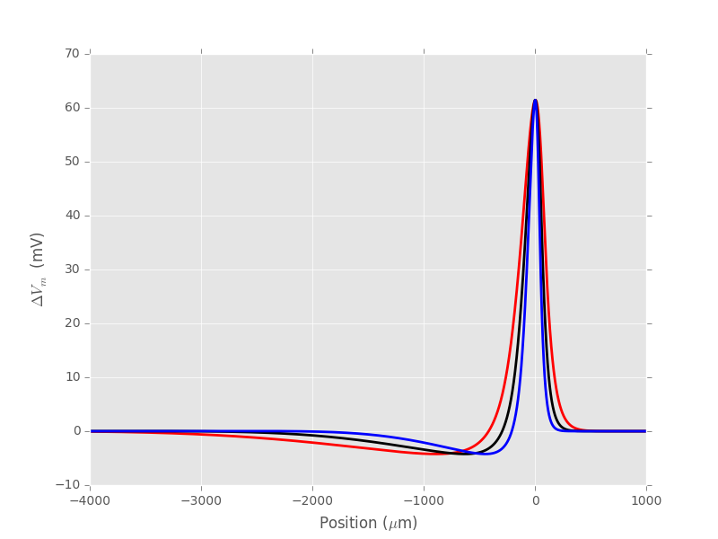

Origin Of The (High Frequency) Extra-cellular Signal
Table of Contents
- 1. Introduction
- 2. Relation between membrane potential and extracellular potential
- 3. Numerical integration of the H & H equation
- 4. Numerical investigation of the radius effect on the extracellular potential
1 Introduction
We want to explore here the basic properties of the extra-cellular potential generated by a uniform active—that is, able to propagate an action potential (or spike)—cable or axon. We are going to use the conductance model of Hodgkin and Huxley (1952) together with the cable model making the "full" H & H model.
Remember that H & H did not solve their full model in their opus magnum, remember also that the mechanical calculator they had at this time was far less powerful that any of the smartphones everyone has nowadays in his/her pocket. They used a "trick" looking at the propagation of a waveform without deformation at a constant speed \(\theta\), that is, a spike or action potential. In this way the spatial derivatives of the membrane potential can be expressed as time derivatives (as we will see bellow) and the partial differential equation (PDE) of the full model can be replaced by ordinary differential equations (ODE).
So we are going to start by deriving the expression of the extra-cellular potential generated by a "cable like neurite"—a neurite with a large length to radius ratio—that can approximated by a line source. We will follow a classical development that is very clearly explained in the book of Plonsey and Barr (2007) Bioelectricity. A Quantitative Approach, published by Springer. This development will lead us to an equation relating the extra-cellular potential to the integral of the weighted second partial derivative of the membrane potential with respect to space, \(\partial^2 V_m(x,t) / \partial x^2\). The H & H model will give us actual values for this derivative but that will require a numerical solution. We will then explore the effect of the axonal diameter on the extra-cellular potential.
2 Relation between membrane potential and extracellular potential
2.1 Basic equations
The electrostatic potential \(\Phi_e\) [mV] generated by a constant point source of intensity \(I_0\) [mA] is given by:
\begin{align}\label{eq:stat}\tag{1} \Phi_e = \frac{1}{4 \pi \sigma_e} \frac{I_0}{r} \, ,\end{align}where \(\sigma_e\) [S/cm] is the conductivity of the extracellular medium assumed homogeneous and \(r\) [cm] is the distance between the source and the electrode (Plonsey and Barr, 2007, Bioelectricity: A Quantitative Approach, p. 29).
For an extended source with a large length to diameter ratio (a cable) that can be approximated by a line source; the generalization of the previous equation for a continuous line source along the x axis (between \(x_{min}\) and \(x_{max}\)) of the 3D Euclidean space equipped with Cartesian coordinates when the electrode is located at \((X,Y,Z)\) is:
\begin{align}\label{eq:stat1}\tag{2} \Phi_e(X,Y,Z) = \frac{1}{4 \pi \sigma_e} \int_{x_{min}}^{x_{max}} \frac{i_m(x)}{r(x)} dx \, ,\end{align}where:
\begin{align}\tag{3} r(x) \doteq \sqrt{(x-X)^2+Y^2+Z^2}\;,\end{align}and \(i_m(x)\) [mA/cm] is the current density at position \(x\) [cm] along the cable.
2.2 Membrane current density
We get an expression for \(i_m(x)\) by considering a small piece of cable of radius \(a\) [cm] and of length \(\Delta x\) [cm] (Plonsey and Barr, 2007).
If the intracellular potential at position \(x\) is written \(\Phi_i(x)\), then Ohm's law—the current equals the potential drop multiplied by the conductance—implies that the axial current \(I_i(x)\) [mA] is given by (\(\sigma_i\) [S/cm] is the intracellular conductivity):
\begin{align} I_i(x) &= -\pi a^2 \sigma_i \frac{\Phi_i(x+\Delta x) - \Phi_i(x)}{\Delta x} \nonumber \\ &\xrightarrow[\Delta x \to 0]{ } -\pi a^2 \sigma_i \frac{d \Phi_i(x)}{dx} \, . \label{eq:stat2}\tag{4} \end{align}Then the charge conservation implies that the membrane current density \(i_m(x)\) (positive for an outgoing current) is given by:
\begin{align} I_i(x+\Delta x) - I_i(x) &= -i_m(x)\, \Delta{}x \nonumber \\ \frac{d I_i(x)}{dx} &= -i_m(x). \label{eq:stat3}\tag{5} \end{align}Combining equation 4 and equation 5 we get:
\begin{align} \label{eq:stat4}\tag{6} i_m(x) &= \pi a^2 \sigma_i \frac{d^2 \Phi_i(x)}{d x^2}\, . \end{align}Now, writing the membrane potential \(V_m = \Phi_i - \Phi_e\) we have:
\begin{align} \label{eq:stat5}\tag{7} i_m(x) &= \pi a^2 \sigma_i \frac{d^2 V_m(x)}{dx^2} \,. \end{align}This allows us to rewrite equation 2 as:
\begin{align} \label{eq:stat6}\tag{8} \Phi_e(X,Y,Z) = \frac{a^2 \sigma_i}{4 \sigma_e} \int_{x_{min}}^{x_{max}} \frac{1}{\sqrt{(x-X)^2+Y^2+Z^2}} \frac{d^2 V_m(x)}{dx^2} dx \,. \end{align}The quasi-static approximation (Plonsey, 1967, The bulletin of mathematical biophysics 29:657-664; Nicholson and Freeman, 1975, Journal of Neurophysiology 38: 356-368)—that amounts to considering the extracellular medium as purely resistive— leads to a more general, time dependent, version of equation 8:
\begin{align} \label{eq:stat7}\tag{9} \Phi_e(X,Y,Z,t) = \frac{a^2 \sigma_i}{4 \sigma_e} \int_{x_{min}}^{x_{max}} \frac{1}{\sqrt{(x-X)^2+Y^2+Z^2}} \frac{\partial^2 V_m(x,t)}{\partial x^2} dx \,. \end{align}Notice that the derivation of equations 8 and 9 does not assume anything about the origin of the membrane potential non-uniformity.
If the membrane potential deviation with respect to rest, \(\Delta{}V_m\), and its derivatives are null at the boundaries of the integration domain, then two rounds of integration by part give (with \(X=0\) and \(h = \sqrt{Y^2+Z^2}\)):
\begin{align} \label{eq:statPart}\tag{10} \Phi_e(h) = \frac{a^2 \sigma_i}{4 \sigma_e} \int_{x_{min}}^{x_{max}} \left(\frac{3 u^2}{(u^2+h^2)^{5/2}} - \frac{1}{(u^2+h^2)^{3/2}}\right) \Delta{}V_m(u) du \, . \end{align}At that stage, in order to go further, we need an explicit expression or value for \(\Delta{}V_m\). We are going to solve numerically the H & H equations for that.
3 Numerical integration of the H & H equation
We follow here the exposition of Tuckwell (1988) Introduction to theoretical neurobiology. Volume 2. CUP, pp 54-701. We want to solve the following set of equations:
\begin{align} C_m \, \frac{\partial V_m}{\partial t} &= \frac{a \sigma_i}{2} \frac{\partial^2 V_m}{\partial x^2} + \overline{g}_K n^4 (V_K-V_m) + \overline{g}_{Na} m^3 h (V_{Na}-V_m) + g_l (V_l - V_m) + I_A \, , \label{eq:HH-PDE}\tag{11}\\ \frac{\partial n}{\partial t} &= \alpha_n(V_m) (1-n) - \beta_n(V_m) n \, , \label{eq:HH-n}\tag{12}\\ \frac{\partial m}{\partial t} &= \alpha_m(V_m) (1-m) - \beta_m(V_m) m \, , \label{eq:HH-m}\tag{13}\\ \frac{\partial h}{\partial t} &= \alpha_h(V_m) (1-h) - \beta_h(V_m) h \, , \label{eq:HH-h}\tag{14} \end{align}where \(C_m\) is the membrane capacitance per unit area [\(\mu{}F/cm^2\)]; \(\overline{g}_K\), \(\overline{g}_{Na}\) and \(g_l\) are the potassium, sodium and leak conductances per unit area [mS/cm\(^2\)]; \(V_K\), \(V_{Na}\) and \(V_l\) are the potassium, sodium and leak currents reversal potentials [mV] and \(I_a\) is "externally" applied current per unit area [\(\mu{}A/cm^2\)] and all the \(\alpha\) and \(\beta\) functions are measured in [1/ms]. You have to be careful here with the units since \(\sigma_i\) is usually given in [S/cm] leading to a first term on the right hand side of equation 11 in [mA/cm\(^2\)] while the left hand side as well as the remaining terms on the right hand side are in [\(\mu{}A/cm^2\)].
3.1 A standardized form for the non-linear reaction-diffusion equations
We will consider a reaction-diffusion system with the form:
\begin{align} \mathbf{u}_t = \mathbf{D} \, \mathbf{u}_{xx} + \mathbf{F}(\mathbf{u}) \, , \label{eq:reaction-diffusion}\tag{15} \end{align}where the \(t\) subscript stands for the partial derivative with respect to time, the \(xx\) subscripts stands for the second partial derivative with respect to position, \(\mathbf{u} = \left(u_1(x,t),\ldots,u_n(x,t)\right)^T \in \mathbb{R}^n\), \(\mathbf{D}\) is a diagonal \(n \times n\) matrix of diffusion coefficients \(\left(D_1,\ldots,D_n\right)\) and \(\mathbf{F}(\cdot) = \left(F_1(\cdot),\ldots,F_n(\cdot)\right)^T\) is a vector-valued function. The corresponds with the above H & H equations is obtained by setting: \(\mathbf{u} = \left(V_m,n,m,h\right)^T\); \(\left(D_1,D_2,D_3,D_4\right) = \left(\frac{a \sigma_i}{2 C_m},0,0,0\right)\), \(F_1(\mathbf{u}) = \left(\overline{g}_K n^4 (V_K-V_m) + \overline{g}_{Na} m^3 h (V_{Na}-V_m) + g_l (V_l - V_m) + I_A\right)/C_m\), \(F_2(\mathbf{u}) \equiv F_2(V_m,n)\), \(F_3(\mathbf{u}) \equiv F_3(V_m,m)\) and \(F_4(\mathbf{u}) \equiv F_4(V_m,h)\) are given by equations 12, 13 and 14.
3.1.1 The heat equation
Let us consider a simpler problem, the heat equation:
\begin{align} u_t = D \, u_{xx} \, , \label{eq:heat-equation}\tag{16} \end{align}where \(u(x,t)\) is a scalar. A numerical integration procedure is possible by finite differencing. Here, the heat equation (16) is replaced by a finite difference equation whose solution approximates the one of the heat equation. We discretize the \(x\) axis using \(m+1\) equally spaced points (with a step \(\Delta{}x\)) and the \(t\) axis using \(n+1\) equally spaced times (with a step \(\Delta{}t\)). We write the approximate solution as:
\begin{align} U_{i,j} = u(i \Delta{}x,j \Delta{}t) \quad i = 0,\ldots,m \; i = 0,\ldots,n \, . \label{eq:discrete-u}\tag{17} \end{align}The finite difference approximations of the required derivatives are:
\begin{align} u_t(x,t) &\approx \frac{U_{i,j+1}-U_{i,j}}{\Delta{}t} \, , \label{eq:u_t}\tag{18} \\ u_x(x,t) &\approx \frac{U_{i+1,j}-U_{i,j}}{\Delta{}x} \, , \label{eq:u_x}\tag{19} \\ u_{xx}(x,t) &\approx \frac{u_x(x,t)-u_x(x-\Delta{}x,t)}{\Delta{}x} \, , \nonumber \\ &\approx \frac{U_{i+1,j}-2 \, U_{i,j} + U_{i-1,j}}{\Delta{}x^2} \, . \label{eq:u_xx}\tag{20} \\ \end{align}The numerical integration of the heat equation with the finite difference equation is obtained by establishing a relation between the \(U_{i,j+1}\) and the \(U_{i,j}\). One methods approximates the second spatial derivative at \(t\) by the one at \(t+\Delta{}t\) giving the scheme:
\begin{align} \frac{U_{i,j+1}-U_{i,j}}{\Delta{}t} = \frac{D}{\Delta{}x^2} \left(U_{i+1,j+1}-2 \, U_{i,j+1} + U_{i-1,j+1}\right)\, . \label{eq:Ames-scheme}\tag{21} \end{align}Crank and Nicolson used the average of the approximations to the second space derivatives at the \(jth\) and \((j+1)th\) time points to get:
\begin{align} \frac{U_{i,j+1}-U_{i,j}}{\Delta{}t} = \frac{D}{2 \Delta{}x^2} \left(U_{i+1,j+1}-2 \, U_{i,j+1} + U_{i-1,j+1} + U_{i+1,j}-2 \, U_{i,j} + U_{i-1,j}\right)\, . \label{eq:Crank-Nicolson}\tag{22} \end{align}More generally a weight factor \(\lambda\) can be used with weight \(\lambda\) for the \((j+1)th\) time points and weight \((1-\lambda)\) for the \(jth\) with \(0 \le \lambda \le 1\). Then with:
\begin{align} r \doteq \frac{D \Delta{}t}{\Delta{}x^2} \, , \label{eq:step-ratio}\tag{23} \end{align}we have:
\begin{align} -r \lambda U_{i-1,j+1} + (1+2 r \lambda) U_{i,j+1} -r \lambda U_{i+1,j+1} = r (1-\lambda) U_{i-1,j} + \left(1-2 r (1-\lambda)\right) U_{i,j} + r (1-\lambda) U_{i+1,j}\, , \label{eq:general-Crank-Nicolson}\tag{23} \end{align}
where all the unknown terms in \(j+1\) are on the left side. Since \(i = 0,1,\ldots,m\) there are \(m+1\) equations with \(m+1\) unknown. This integration scheme is called implicit because a linear system must be solved to obtain the values of \(u(x,t)\) at the next time step. The system defined by equation 23 is tridiagonal and can be solved without matrix inversion. In Python, the scipy.linalg sub-module provides the solve_banded function to work efficiently with linear systems exhibiting a banded structure.
3.1.2 Adding the reaction term: Lee's method
We now add a reaction term \(F(u)\) to the scalar heat equation:
\begin{align} u_t = D \, u_{xx} + F(u) \, . \label{eq:heat-equation-plus-reaction}\tag{24} \end{align}In the Crank-Nicolson method the second space derivative is approximated by the average of its finite-difference approximations at time points \(j\) and \(j+1\). A similar estimate is needed for \(F(u)\); in other words we need \(F(U_{i,j+^1/_2})\) and we approximate \(U_{i,j+^1/_2}\) by:
\begin{align} U_{i,j+^1/_2} &\approx U_{i,j} + (U_{i,j} - U_{i,j-1})/2 \nonumber \\ &\approx \frac{3}{2} U_{i,j} - \frac{1}{2} U_{i,j-1} \, . \label{eq:mid-point}\tag{25} \end{align}And Lees' modification of the Crank-Nicolson method gives the tridiagonal system (remember that \(\lambda\) in equation 23 equals \(^1/_2\) for the Crank-Nicolson method):
\begin{align} -\frac{r}{2} U_{i-1,j+1} + (1+r) U_{i,j+1} -\frac{r}{2} U_{i+1,j+1} = \frac{r}{2} U_{i-1,j} + (1-r) U_{i,j} + \frac{r}{2}U_{i+1,j} + \Delta{}t F\left(\frac{3}{2} U_{i,j} - \frac{1}{2} U_{i,j-1}\right)\, . \label{eq:Lees-method}\tag{26} \end{align}Clearly this last equation can only be used if \(j>0\) so for \(j=0\) we use an explicit version (we use \(j\) instead of \(j+1\) in the right hand side of equation 21):
\begin{align} U_{i,1} = r \left(U_{i-1,0} -2 U_{i,0} + U_{i+1,0}\right) + \Delta{}t F\left(U_{i,0}\right) + U_{i,0}\, . \label{eq:Lees-method-explicit}\tag{27} \end{align}3.1.3 Boundary conditions
There is still one problem to consider before starting writing our code: the boundary conditions, that is what happens at the ends of the cable. There two "extreme" possibilities (and a third one in between the two). The first possibility consists in imposing the voltage at both ends, this leads to the Dirichlet conditions:
\begin{align} u(0,t) &= \alpha \, , \label{eq:Dirichlet-0}\tag{28} \\ u(L,t) &= \beta \, . \label{eq:Dirichlet-L}\tag{29} \end{align}The finite difference version is:
\begin{align} U_{0,j} &= \alpha \, , \quad j=0,1,\ldots \, , \label{eq:Dirichlet-0-discrete}\tag{30} \\ U_{m,j} &= \beta \, , \quad j=0,1,\ldots \, . \label{eq:Dirichlet-L-discrete}\tag{31} \end{align}These conditions reduce the number of unknown in our linear system by 2, from \(m+1\) to \(m-1\) and correspond to voltage-clamping the ends of the cable.
The more common conditions in simulation studies are the Neumann conditions where the values of the space derivatives of the potential are imposed at the ends:
\begin{align} u_x(0,t) &= \alpha \, , \label{eq:Neumann-0}\tag{32} \\ u_x(L,t) &= \beta \, . \label{eq:Neumann-L}\tag{33} \end{align}The common values chosen are \(\alpha = \beta = 0\) often referred to as the "sealed ends" conditions—the ones we are going to choose in our numerical implementation. To get the finite difference version, a quick solution would be using \(u_x(x,t) \approx \left(U_{i+1,j}-U_{i,j}\right) / \Delta{}x\), but we can do better—in term of the approximation of the space derivative by its finite difference version at fixed \(\Delta{}x\) using:
\begin{align} u_x(i \Delta{}x,j \Delta{}t) &\approx \frac{U_{i+1,j} - U_{i-1,j}}{2 \Delta{}x} \, . \label{eq:central-difference}\tag{34} \end{align}Can you see why? Then the Neumann conditions become:
\begin{align} U_{-1,j} &= -2 \alpha \Delta{}x + U_{1,j}\, , \label{eq:Neumann-0-discrete}\tag{35} \\ U_{m+1,j} &= 2 \beta \Delta{}x + U_{m-1,j} \, . \label{eq:Neumann-L-discrete}\tag{36} \end{align}This amounts to introducing "false boundaries" and substituting 35 in 26, the first equation becomes (for \(j>0\)):
\begin{align} (1+r) U_{0,j+1} -r U_{1,j+1} = - 2 r \alpha \Delta{}x + (1-r) U_{0,j} + r U_{1,j} + \Delta{}t F\left(\frac{3}{2} U_{0,j} - \frac{1}{2} U_{0,j-1}\right)\, . \label{eq:Lees-left}\tag{37} \end{align}At \(j=0\) the substitution in equation 27 leads to:
\begin{align} U_{0,1} = 2 r \left(U_{1,0} - U_{0,0} - \alpha \Delta{}x\right) + \Delta{}t F\left(U_{0,0}\right) + U_{0,0}\, . \label{eq:Lees-left-at-0}\tag{38} \end{align}At the other end we get for \(j>0\):
\begin{align} -r U_{m-1,j+1} + (1+r) U_{m,j+1} = 2 r \beta \Delta{}x + r U_{m-1,j} + (1-r) U_{m,j} + \Delta{}t F\left(\frac{3}{2} U_{m,j} - \frac{1}{2} U_{m,j-1}\right)\, , \label{eq:Lees-right}\tag{39} \end{align}while for \(j=0\) we have:
\begin{align} U_{m,1} = 2 r \left(U_{m-1,0} - U_{m,0} + \beta \Delta{}x\right) + \Delta{}t F\left(U_{m,0}\right) + U_{m,0}\, . \label{eq:Lees-right-at-0}\tag{40} \end{align}3.2 Python code doing the job
We are going to solve the standard H & H model using the Neumann boundary conditions with \(\alpha = \beta = 0\) ("sealed ends"). We start by an IPython session—but it wokrs as well with a classical Python session—loading the two main modules we are going on a regular basis, numpy and pylab a sub-module of matplotlib:
import numpy as np
import matplotlib.pylab as plt
plt.ion()
#%matplotlib inline
plt.style.use('ggplot')
The three last commands give us interactive graphics (plt.ion) or inline graphics when using the jupyter notebook (in that case, comment the previous line with "#" and uncomment the following one) and a nicer default style for the graphs (plt.style.use('ggplot')). We then assign a few variables considering an axon with a radius \(a\) of 1 \(\mu{}m\) that is \(10^{-4}\) cm (for quantitative data on CNS axons diameters, see Perge et al (2013)):
a = 1e-4
Cm = 1.0 # H & H 1952 [μF / cm^2] rho = 35.4 # H & H 1952, rho is the inverse of σi [Ω cm] D = a / (2.0 * rho * Cm) # the "Diffusion" constant D
1.4124293785310736e-06
Notice that with this choice of units D is measured in cm\(^2\) / \(\mu{}s\). We define next, for each activation variable, \(n, m, h\) the \(\alpha(v)\) and \(\beta(v)\) functions—where the formal parameter \(v\) stands for the deviation of the membrane voltage with respect to rest—as well as a function returning the steady-state value of the variable at a given voltage. We start with the \(n\) activation variable—the numpy module must have been previously imported with the alias np (import numpy as np)—:
def alpha_n(v):
if np.abs(v-10.0) < 1e-10:
return 0.1
else:
return 0.01*(10.0 - v)/(np.exp((10.0-v)/10.0)-1.0)
def beta_n(v):
return 0.125*np.exp(-0.0125*v)
n_inf = np.vectorize(lambda v: alpha_n(v)/(alpha_n(v) + beta_n(v)))
Notice that we took care of the special case \(v=10\) using the limit to avoid the undefined expression \(0/0\). The n_inf function has been defined in a vectorized form since our definition of alpha_n works only with scalar arguments. Having defined these functions it is always a good idea to make a couple of graphs to make sure that we did things properly (we should get figures 4 and 5, p 511 of H & H 1952; don't forget that the membrane voltage convention at that time was the opposite of the one now used):
vv = np.linspace(-50,110,201) plt.plot(vv,np.vectorize(alpha_n)(vv),lw=2) plt.plot(vv,np.vectorize(beta_n)(vv),lw=2) plt.plot(vv,n_inf(vv),lw=2)
Figure 1: \(\alpha_n\) (red), \(\beta_n\) (blue) and \(n_{\infty}\) (violet) as a function of the membrane voltage deviation with respect to rest.
We can now define function F_n corresponding to the \(F_2\) of equation 15 whose expression is given by equation 12; this function takes two formal parameters: the membrane potential (deviation) v and the activation variable n:
def F_n(v,n):
if np.abs(v-10.0) < 1e-10:
alpha = 0.1
else:
alpha = 0.01*(10.0 - v)/(np.exp((10.0-v)/10.0)-1.0)
beta = 0.125*np.exp(-0.0125*v)
return alpha*(1-n)-beta*n
vF_n = np.vectorize(F_n)
It is again a good idea to use these newly defined functions to make sure that nothing "too pathological" happens:
F_n(20,0.6)
0.0048690095444177128
vF_n([-10,0,10,20,30],[0.1,0.2,0.3,0.4,0.5])
array([ 0.01400882, 0.02155814, 0.03690637, 0.05597856, 0.07269618])
Notice that we "redefine" alpha_n and beta_n inside F_n, this is to gain execution time by avoiding function calls. We also define a vectorized version vF_n that will take two formal parameters, v and n, that can be vectors. We proceed in the same way with the \(m\) activation variable:
def alpha_m(v):
if np.abs(v-25.0) < 1e-10:
return 1.0
else:
return 0.1*(25.0 - v)/(np.exp((25.0 - v)/10.0)-1.0)
def beta_m(v):
return 4*np.exp(-.0555*v)
m_inf = np.vectorize(lambda v: alpha_m(v)/(alpha_m(v) + beta_m(v)))
The graphs (not shown) giving figures 7 and 8 pp 515-516 are obtained with:
vv = np.linspace(-50,110,201) plt.plot(vv,np.vectorize(alpha_m)(vv),lw=2) plt.plot(vv,np.vectorize(beta_m)(vv),lw=2) plt.plot(vv,m_inf(vv)*10,lw=2) plt.xlim(-10,110) plt.ylim(0,10)
def F_m(v,m):
if np.abs(v-25.0) < 1e-10:
alpha = 1.0
else:
alpha = 0.1*(25.0 - v)/(np.exp((25.0 - v)/10.0)-1.0)
beta = 4*np.exp(-.0555*v)
return alpha*(1-m)-beta*m
vF_m = np.vectorize(F_m)
A quick check gives:
vF_m([-10,0,10,20,30],[0.1,0.2,0.3,0.4,0.5])
array([-0.59869277, -0.62114902, -0.38730895, -0.06484611, 0.2569922 ])
And for the \(h\) activation variable:
def alpha_h(v):
return 0.07*np.exp(-0.05*v)
def beta_h(v):
return 1.0/(np.exp((30.0 - v)/10.0) + 1.0)
def h_inf(v):
return alpha_h(v)/(alpha_h(v) + beta_h(v))
Notice that since alpha_h is already (implicitly) vectorized, there is no need to use np.vectorize when defining function h_inf. The graphs (not shown) giving figures 9 and 10 pp 517-518 are obtained with:
vv = np.linspace(-50,110,201) plt.plot(vv,np.vectorize(alpha_h)(vv),lw=2) plt.plot(vv,np.vectorize(beta_h)(vv),lw=2) plt.plot(vv,h_inf(vv),lw=2)
def F_h(v,h):
return 0.07*np.exp(-0.05*v)*(1-h)-1.0/(np.exp((30.0 - v)/10.0) + 1.0)*h
vF_h = np.vectorize(F_h)
A quick check gives:
vF_h([-10,0,10,20,30],[0.1,0.2,0.3,0.4,0.5])
array([ 0.10207082, 0.04651483, -0.00604087, -0.09212563, -0.24219044])
We define next F_V corresponding to the \(F_1\) of equation 15. This function takes 5 formal parameters: v, n, m, h and Ia the injected current. The maximal conductances [mS / cm\(^2\)] and reversal potentials [mV] from H & H (1952) are assigned to local variables in the function. A vectorized version is also defined:
def F_V(v,n,m,h,Ia):
GNa, GK, GL = 120.0, 36.0, 0.3 # H & H 1952
ENa, EK, EL = 115.0, -12.0, 10.5987 # H & H 1952
return (GK*n**4*(EK-v)+GNa*m**3*h*(ENa-v)+GL*(EL-v)+Ia)/Cm
vF_V = np.vectorize(F_V)
We can now make a first (explicit) step. We are going to consider a thin cable with a 1 \(\mu{}m\) radius and we start by getting its length constant: \(\lambda = \sqrt{a/2 \rho_i \sigma_m}\). We already set \(\rho_i = 35.4\) [\(\Omega{}\) cm], we get the resting value of \(\sigma_m\) [S / cm\(^2\)] by getting the activation variables values at resting level (don't forget that the conductance densities given by H & H are in [mS]):
sigma_m_rest = (36*n_inf(0)**4+120*m_inf(0)**3*h_inf(0)+0.3)/1000 sigma_m_rest
0.00067725364844574128
This gives us a length constant at rest in cm:
lambda_rest = np.sqrt(1e-4/2/rho/sigma_m_rest) lambda_rest
0.045667548060889344
So our length constant is roughly 500 \(\mu{}m\). We will pick a space discretization step of 50 \(\mu{}m\) (5 \(\times 10^{-3}\) cm) equal to a tenth of the length constant and choose a cable length of 20000 \(\mu{}m\) (2 cm), forty times the length constant. We then choose our time discretization step such that the value \(r\) defined by equation 23 is not too large, say 2 (the reason for using an implicit method like the Crank-Nicolson method instead of an explicit one in that the latter is stable only if \(r \le 0.5\)). That gives us for \(\Delta{}t\) (remember that our D above is in cm\(^2\) / \(\mu{}s\) and we want a result in \(ms\)):
Delta_x = 5e-3 r = 2 Delta_t = r*Delta_x**2/D/1000 Delta_t
0.0354
To be on the safe side, we will pick a \(\Delta{}t\) of 0.025 ms:
Delta_t = 0.025
We now need 4 vectors containing the membrane voltage (deviation) and the value of each activation variable at each discrete location along our cable:
L = 2 M = L/Delta_x v_0 = np.zeros(M+1) n_0 = np.ones(M+1)*n_inf(0) m_0 = np.ones(M+1)*m_inf(0) h_0 = np.ones(M+1)*h_inf(0)
We also need a vector of the same length with the injected current density at each point along the axon:
Ia_0 = np.zeros(M+1) Ia_0[0] = 1000.0
We can now define a function performing a single time step with the explicit method using equations 27, 38 and 40:
def explicit_step(v,n,m,h,Ia):
v_new = np.copy(v)
n_new = np.copy(n)
m_new = np.copy(m)
h_new = np.copy(h)
reaction_term = Delta_t * vF_V(v,n,m,h,Ia)
diffusion_term = np.zeros(len(v))
diffusion_term[1:-1] = (v[0:-2]-2*v[1:-1]+v[2:])*r
diffusion_term[0] = 2*r*(v[1]-v[0])
diffusion_term[-1] = 2*r*(v[-2]-v[-1])
v_new += diffusion_term + reaction_term
n_new += Delta_t*vF_n(v,n)
m_new += Delta_t*vF_m(v,m)
h_new += Delta_t*vF_h(v,h)
return v_new,n_new,m_new,h_new
We perform one explicit step with:
v_1, n_1, m_1, h_1 = explicit_step(v_0,n_0,m_0,h_0,Ia_0)
The general time step using Lees' method is an implicit one and requires a banded matrix (containing the voltage factor on the right hand side of equations 28, 37 and 39) to be define that's what do now:
A = np.zeros((3,M+1)) A[0,2:] = -r/2.0 # upper diagonal A[0,1] = -r # upper diagonal A[1,:] = 1.0 + r # diagonal A[2,:-3] = -r/2.0 # lower diagonal A[2,-2] = -r # lower diagonal
We now define a function doing one Lees' step. The function needs the present and previous (or old) values of v, n, m and h as well as Ia. The function assumes that the banded matrix A above is already available in the environment and loads function solve_banded from scipy.linalg sub-module:
def lees_step(v_old,n_old,m_old,h_old,Ia_old,
v_present,n_present,m_present,h_present,Ia_present):
from scipy.linalg import solve_banded
v_extra = 1.5*v_present-0.5*v_old # extrapolated mid-point value
n_extra = 1.5*n_present-0.5*n_old # extrapolated mid-point value
m_extra = 1.5*m_present-0.5*m_old # extrapolated mid-point value
h_extra = 1.5*h_present-0.5*h_old # extrapolated mid-point value
Ia_extra = 1.5*Ia_present-0.5*Ia_old # extrapolated mid-point value
n_new = np.copy(n_present)+Delta_t*vF_n(v_extra,n_extra)
m_new = np.copy(m_present)+Delta_t*vF_m(v_extra,m_extra)
h_new = np.copy(h_present)+Delta_t*vF_h(v_extra,h_extra)
reaction_term = Delta_t*vF_V(v_extra,n_extra,m_extra,h_extra,Ia_extra)
diffusion_term = (1-r)*np.copy(v_present)
diffusion_term[1:-1] += (v_present[0:-2] + v_present[2:])*r/2.0
diffusion_term[0] += r*v_present[1]
diffusion_term[-1] += r*v_present[-2]
v_new = solve_banded((1,1),A,reaction_term+diffusion_term)
return v_new, n_new, m_new, h_new
We make one step with:
v_2,n_2,m_2,h_2 = lees_step(v_0,n_0,m_0,h_0,Ia_0,v_1,n_1,m_1,h_1,Ia_0)
Now 2000 more steps stopping the stimulation after 2 ms or 80 steps (this take a few seconds on my slow laptop):
v_M = np.zeros((2002,int(M+1)))
v_M[0] = v_0
v_M[1] = v_1
n_M = np.zeros((2002,int(M+1)))
n_M[0] = n_0
n_M[1] = n_1
m_M = np.zeros((2002,int(M+1)))
m_M[0] = m_0
m_M[1] = m_1
h_M = np.zeros((2002,int(M+1)))
h_M[0] = h_0
h_M[1] = h_1
for i in range(2,2002):
if i < 80:
v_M[i,:],n_M[i,:],m_M[i,:],h_M[i,:] = lees_step(v_M[i-2,:],n_M[i-2,:],m_M[i-2,:],h_M[i-2,:],Ia_0,
v_M[i-1,:],n_M[i-1,:],m_M[i-1,:],h_M[i-1,:],Ia_0)
if i == 80:
v_M[i,:],n_M[i,:],m_M[i,:],h_M[i,:] = lees_step(v_M[i-2,:],n_M[i-2,:],m_M[i-2,:],h_M[i-2,:],Ia_0,
v_M[i-1,:],n_M[i-1,:],m_M[i-1,:],h_M[i-1,:],0)
if i > 80:
v_M[i,:],n_M[i,:],m_M[i,:],h_M[i,:] = lees_step(v_M[i-2,:],n_M[i-2,:],m_M[i-2,:],h_M[i-2,:],0,
v_M[i-1,:],n_M[i-1,:],m_M[i-1,:],h_M[i-1,:],0)
We can graph the spatial profile of the membrane potential deviation at different times like every 40 time steps or every ms for the first 10 ms:
xx = np.arange(0,M+1)*5e-3
for i in range(0,442,40):
plt.plot(xx,v_M[i],color='black',lw=2)
plt.xlabel('Position (cm)')
plt.ylabel(r'$\Delta{}V_m$ (mV)')

Figure 2: Spatial profile of the membrane voltage at every ms for 11 ms (from left to right).
Before going further, writing a couple of functions abstracting the many pieces of code we have just used seems a good idea.
3.3 Some functions definitions
We want a function that takes axon geometrical parameters—radius and length—, simulation time, space and time steps and applied current as formal parameters and for which all the other parameters (reversal potentials, conductances, etc) are set. If we want to be able to change one or several of these other parameters, it is worth exploiting one of the great features of Python: is supports lexical closures; and that allows us to write functions returning other functions. That's what we will do here (remark that all the functions previously defined are reused directly, except F_V since the necessary parameters are in the lexical scope of the function definition). In order to compare our code output with cases published in the literature like Cooley and Dodge (1966) we add a temperature, T, formal parameter. The H & H model parameters we used til now are valid at 6.3°C and we implement the temperature dependence of the rate equations given by H & H, Cooley and Dodge, Tuckwell, etc…
def mk_cable_fcts(Cm = 1.0,
rho = 35.4,
GNa = 120.0,
ENa = 115.0,
GK = 36.0,
EK = -12.0,
GL = 0.3,
EL = 10.5987,
T = 6.3):
"""Returns functions for H & H axon simulation
Formal parameters:
Cm: a double, the membrane capacitance [μF / cm^2]
rho: a double, intracellular resistivity [Ω cm]
GNa: sodium conductance density [mS / cm^2]
ENa: sodium reversal potential [mV]
GK: potassium conductance density [mS / cm^2]
EK: potassium reversal potential [mV]
GL: leak conductance density [mS / cm^2]
EL: leak reversal potential [mV]
T: a positive double, the temperature in Celsius
Returns:
D_fct: a function of the axon radius in cm that
returns the "diffusion coefficient"
r_fct: a function of the radius, the space and time steps
that returns the value of r in equation 23
lambda_fct: a function of the radius that returns the
length constant
sim_with_lees: a function of the radius, the length, the steps
the injected current that performs the simulation
"""
import numpy as np
Q = 3**((T-6.3)/10)
def D_fct(a):
return a / (2.0 * rho * Cm)
def alpha_n(v):
if np.abs(v-10.0) < 1e-10:
return 0.1
else:
return 0.01*(10.0 - v)/(np.exp((10.0-v)/10.0)-1.0)
def beta_n(v):
return 0.125*np.exp(-0.0125*v)
n_inf = np.vectorize(lambda v: alpha_n(v)/(alpha_n(v) + beta_n(v)))
def F_n(v,n):
if np.abs(v-10.0) < 1e-10:
alpha = 0.1
else:
alpha = 0.01*(10.0 - v)/(np.exp((10.0-v)/10.0)-1.0)
beta = 0.125*np.exp(-0.0125*v)
return (alpha*(1-n)-beta*n)*Q
vF_n = np.vectorize(F_n)
def alpha_m(v):
if np.abs(v-25.0) < 1e-10:
return 1.0
else:
return 0.1*(25.0 - v)/(np.exp((25.0 - v)/10.0)-1.0)
def beta_m(v):
return 4*np.exp(-.0555*v)
m_inf = np.vectorize(lambda v: alpha_m(v)/(alpha_m(v) + beta_m(v)))
def F_m(v,m):
if np.abs(v-25.0) < 1e-10:
alpha = 1.0
else:
alpha = 0.1*(25.0 - v)/(np.exp((25.0 - v)/10.0)-1.0)
beta = 4*np.exp(-.0555*v)
return (alpha*(1-m)-beta*m)*Q
vF_m = np.vectorize(F_m)
def alpha_h(v):
return 0.07*np.exp(-0.05*v)
def beta_h(v):
return 1.0/(np.exp((30.0 - v)/10.0) + 1.0)
def h_inf(v):
return alpha_h(v)/(alpha_h(v) + beta_h(v))
def F_h(v,h):
return Q*(0.07*np.exp(-0.05*v)*(1-h)-1.0/(np.exp((30.0 - v)/10.0) + 1.0)*h)
vF_h = np.vectorize(F_h)
def F_V(v,n,m,h,Ia):
return (GK*n**4*(EK-v)+GNa*m**3*h*(ENa-v)+GL*(EL-v)+Ia)/Cm
vF_V = np.vectorize(F_V)
def lambda_fct(a):
sigma_m_rest = (GK*n_inf(0)**4+GNa*m_inf(0)**3*h_inf(0)+GL)/1000
return np.sqrt(a/2/rho/sigma_m_rest)
def r_fct(a,Delta_x,Delta_t):
return D_fct(a)*Delta_t*1000/Delta_x**2
def sim_with_lees(a,L,duration,
Delta_x,Delta_t,
Ia_amp, Ia_duration):
def explicit_step(v,n,m,h,Ia):
v_new = np.copy(v)
n_new = np.copy(n)
m_new = np.copy(m)
h_new = np.copy(h)
reaction_term = Delta_t * vF_V(v,n,m,h,Ia)
diffusion_term = np.zeros(len(v))
diffusion_term[1:-1] = (v[0:-2]-2*v[1:-1]+v[2:])*r
diffusion_term[0] = 2*r*(v[1]-v[0])
diffusion_term[-1] = 2*r*(v[-2]-v[-1])
v_new += diffusion_term + reaction_term
n_new += Delta_t*vF_n(v,n)
m_new += Delta_t*vF_m(v,m)
h_new += Delta_t*vF_h(v,h)
return v_new,n_new,m_new,h_new
def lees_step(v_old,n_old,m_old,h_old,Ia_old,
v_present,n_present,m_present,h_present,Ia_present):
from scipy.linalg import solve_banded
v_extra = 1.5*v_present-0.5*v_old # extrapolated mid-point value
n_extra = 1.5*n_present-0.5*n_old # extrapolated mid-point value
m_extra = 1.5*m_present-0.5*m_old # extrapolated mid-point value
h_extra = 1.5*h_present-0.5*h_old # extrapolated mid-point value
Ia_extra = 1.5*Ia_present-0.5*Ia_old # extrapolated mid-point value
n_new = np.copy(n_present)+Delta_t*vF_n(v_extra,n_extra)
m_new = np.copy(m_present)+Delta_t*vF_m(v_extra,m_extra)
h_new = np.copy(h_present)+Delta_t*vF_h(v_extra,h_extra)
reaction_term = Delta_t*vF_V(v_extra,n_extra,m_extra,h_extra,Ia_extra)
diffusion_term = (1-r)*np.copy(v_present)
diffusion_term[1:-1] += (v_present[0:-2] + v_present[2:])*r/2.0
diffusion_term[0] += r*v_present[1]
diffusion_term[-1] += r*v_present[-2]
v_new = solve_banded((1,1),A,reaction_term+diffusion_term)
return v_new, n_new, m_new, h_new
r = r_fct(a,Delta_x,Delta_t)
M = int(np.ceil(L/Delta_x))
N = int(np.ceil(duration/Delta_t))
Na = int(np.ceil(Ia_duration/Delta_t))
v_0 = np.zeros(M+1)
n_0 = np.ones(M+1)*n_inf(0)
m_0 = np.ones(M+1)*m_inf(0)
h_0 = np.ones(M+1)*h_inf(0)
Ia_0 = np.zeros(M+1)
Ia_0[0] = Ia_amp
v_1, n_1, m_1, h_1 = explicit_step(v_0,n_0,m_0,h_0,Ia_0)
A = np.zeros((3,M+1))
A[0,2:] = -r/2.0 # upper diagonal
A[0,1] = -r # upper diagonal
A[1,:] = 1.0 + r # diagonal
A[2,:-3] = -r/2.0 # lower diagonal
A[2,-2] = -r # lower diagonal
v_M = np.zeros((N,int(M+1)))
v_M[0] = v_0
v_M[1] = v_1
n_M = np.zeros((N,int(M+1)))
n_M[0] = n_0
n_M[1] = n_1
m_M = np.zeros((N,int(M+1)))
m_M[0] = m_0
m_M[1] = m_1
h_M = np.zeros((N,int(M+1)))
h_M[0] = h_0
h_M[1] = h_1
for i in range(2,N):
if i < Na:
v_M[i,:],n_M[i,:],m_M[i,:],h_M[i,:] = lees_step(v_M[i-2,:],n_M[i-2,:],m_M[i-2,:],h_M[i-2,:],Ia_0,
v_M[i-1,:],n_M[i-1,:],m_M[i-1,:],h_M[i-1,:],Ia_0)
if i == Na:
v_M[i,:],n_M[i,:],m_M[i,:],h_M[i,:] = lees_step(v_M[i-2,:],n_M[i-2,:],m_M[i-2,:],h_M[i-2,:],Ia_0,
v_M[i-1,:],n_M[i-1,:],m_M[i-1,:],h_M[i-1,:],0)
if i > Na:
v_M[i,:],n_M[i,:],m_M[i,:],h_M[i,:] = lees_step(v_M[i-2,:],n_M[i-2,:],m_M[i-2,:],h_M[i-2,:],0,
v_M[i-1,:],n_M[i-1,:],m_M[i-1,:],h_M[i-1,:],0)
return v_M,n_M,m_M,h_M
return D_fct, r_fct, lambda_fct, sim_with_lees
Once this kind of function has been defined the first thing to do is to check that it gives the same results as we got before doing the job step by step:
D1,r1,lambda1,sim1 = mk_cable_fcts()
D1(1e-4)
r1(1e-4,5e-3,0.025)
v1,n1,m1,h1 = sim1(1e-4,2,20,5e-3,0.025,1000,2)
for i in range(0,442,40):
plt.plot(v1[i],color='black',lw=2)
The results are not shown since they are identical to the previous ones but you are invited to check for yourself.
3.4 Checking against Cooley and Dodge (1966) results
Cooley and Dodge (1966) were the first to numerically solve the "full" H & H model—the one specified by equations 11-14—and we will now reproduce their figure 2 (we get slightly different results since our stimulation is not exactly the same):
D_cd,r_cd,lambda_cd,sim_cd = mk_cable_fcts(rho=34.5,EL=10.598,T=18.5) v_cd,n_cd,m_cd,h_cd = sim_cd(0.0238,7,10,0.025,0.001,2500,0.2)
plt.subplot(211)
xx = np.arange(v_cd.shape[1])*0.025
plt.plot(xx,v_cd[200,:],color='black',lw=2)
plt.plot(xx,v_cd[500,:],color='black',lw=2)
plt.plot(xx,v_cd[1000,:],color='black',lw=2)
plt.plot(xx,v_cd[2000,:],color='black',lw=2)
plt.plot(xx,v_cd[3000,:],color='black',lw=2)
plt.xlim(0,7)
plt.xlabel('Position (cm)')
plt.ylabel(r'$\Delta{}V_m$ (mV)')
plt.subplot(212)
tt = np.arange(v_cd.shape[0])*0.001
plt.plot(tt,v_cd[:,0],color='black',lw=2)
plt.plot(tt,v_cd[:,40],color='black',lw=2)
plt.plot(tt,v_cd[:,80],color='black',lw=2)
plt.plot(tt,v_cd[:,120],color='black',lw=2)
plt.xlim(0,3.5)
plt.xlabel('Time (ms)')
plt.ylabel(r'$\Delta{}V_m$ (mV)')
Figure 3: Replication of figure 2 from Cooley and Dodge (1966). Top: the voltage space profiles are shown, from left to right at 0.2, 0.5, 1, 2 and 3 ms. Bottom: the voltage time profiles are shown from left to right at 0, 1, 2 and 3 cm.
We get a speed [m/s] of:
0.025*(np.argmax(v_cd[3000,:])-np.argmax(v_cd[2000,:]))*10
19.0
with a precision of 25 cm/S that is compatible with the results reported in their table 1 (p 591).
3.5 Checking against the traveling wave solution
As we mentioned in the introduction, Hodgkin and Huxley did not explore numerically their "full" model but a particular solution of it: the traveling wave. Their reasoning was that is their full model was correct, the action potential—a wave propagating at a constant speed without deformation—should be one of its solutions. They therefore considered the membrane potential as a function of time observed at an arbitrary location chosen as the origin, \(x=0\), far enough from both ends of the axon. Then, writing \(V_0(t)\) the time course of the membrane potential observed when the action potential goes through the origin, and assuming a (constant) propagation speed, \(u\), they could write the general solution of their model as: \(V(x,t) = V_0(t-x/u)\), since the potential observed at location \(x\) at time \(t\) should be the one observed at the origin \(x/u\) seconds before. Then, writing \(z = t - x/u\) we have:
\begin{align} \frac{\partial V}{\partial t} = \frac{d V_0}{d z}\, , \label{eq:Vt-as-Vz}\tag{41} \end{align} \begin{align} \frac{\partial V}{\partial x} = - \frac{1}{u} \frac{d V_0}{d z}\, , \label{eq:Vx-as-Vz}\tag{42} \end{align} \begin{align} \frac{\partial^2 V}{\partial x^2} = \frac{1}{u^2} \frac{d^2 V_0}{d z^2}\, . \label{eq:Vxx-as-Vz}\tag{43} \end{align}The traveling wave version of equation 11 is then:
\begin{align} \frac{d V_0}{d z} = \frac{D}{u^2} \frac{d^2 V_0}{d z^2} + \left(\overline{g}_K n^4 (V_K-V_0) + \overline{g}_{Na} m^3 h (V_{Na}-V_0) + g_l (V_l - V_0)\right)/ Cm \, , \label{eq:traveling-wave}\tag{44} \end{align}
where \(D = \frac{a \sigma_i}{2 C_m}\) like before. If the speed \(u\) is known, this (set of) ODE(s) can be solved for \(V_0\). The game is then to find such a \(u\) for which the computed solution does not diverge (this is done by a tedious trial an error approach). Here is how it can be done using the ODE solvers of Python. We start by defining a "constructor" function (giving the Cooley and Dodge values as default):
def mk_travel_wave(a = 0.0238,
Cm = 1.0,
rho = 34.5,
GNa = 120.0,
ENa = 115.0,
GK = 36.0,
EK = -12.0,
GL = 0.3,
EL = 10.598,
T = 18.5):
"""Returns a function for H & H traveling wave simulation
Formal parameters:
a: a double, the axon radius [cm]
Cm: a double, the membrane capacitance [μF / cm^2]
rho: a double, intracellular resistivity [Ω cm]
GNa: sodium conductance density [mS / cm^2]
ENa: sodium reversal potential [mV]
GK: potassium conductance density [mS / cm^2]
EK: potassium reversal potential [mV]
GL: leak conductance density [mS / cm^2]
EL: leak reversal potential [mV]
T: a positive double, the temperature in Celsius
Returns:
F: a function suitable for use with ODE, the propagation
speed is the third formal parameter.
"""
Q = 3**((T-6.3)/10) ## Temperature effect
D = a*1000/2/rho/Cm ## Diffusion coefficient cm^2/ms
def F_n(v,n):
if np.abs(v-10.0) < 1e-10:
alpha = 0.1
else:
alpha = 0.01*(10.0 - v)/(np.exp((10.0-v)/10.0)-1.0)
beta = 0.125*np.exp(-0.0125*v)
return Q*(alpha*(1-n)-beta*n)
def F_m(v,m):
if np.abs(v-25.0) < 1e-10:
alpha = 1.0
else:
alpha = 0.1*(25.0 - v)/(np.exp((25.0 - v)/10.0)-1.0)
beta = 4*np.exp(-.0555*v)
return Q*(alpha*(1-m)-beta*m)
def F_h(v,h):
return Q*(0.07*np.exp(-0.05*v)*(1-h)-1.0/(np.exp((30.0 - v)/10.0) + 1.0)*h)
def F_I(i,v,n,m,h,u):
return u**2*(i-(GK*n**4*(EK-v)+GNa*m**3*h*(ENa-v)+GL*(EL-v))/Cm)/D
def F_V(i):
return i
def F(t,y,u):
v,i,n,m,h = y
return [F_V(i),F_I(i,v,n,m,h,u),F_n(v,n),F_m(v,m),F_h(v,h)]
return F
We then define our initial condition from the values at 1 ms of the membrane potential, n, m and h variables at 3 cm of our previous "Cooley and Dodge check".
y0 = [v_cd[1000,80],(v_cd[1001,80]-v_cd[1000,80])/(tt[1001]-tt[1000]),n_cd[1000,80],m_cd[1000,80],h_cd[1000,80]]
We then call the lsoda solver with:
from scipy.integrate import ode
F = mk_travel_wave()
r = ode(F)
r.set_integrator('lsoda')
r.set_initial_value(y0,0.0)
r.set_f_params(1.8996800434730384) ## propagation speed is set here [cm/ms]
tt2 = np.linspace(0,10,1001)
res = np.zeros((len(tt2),5))
for i in range(1,len(tt2)): res[i] = r.integrate(tt2[i])
Getting the speed right is the result of a long trial and error procedure (think of H & H who did not have a computer!).
We can then superpose the two solutions we got (from the full H & H model of the previous section and from the traveling wave):
plt.plot(tt-1,v_cd[:,80],lw=2)
plt.plot(tt2,res[:,0])
plt.ylim(-20,100)
plt.xlabel('Time (ms)')
plt.ylabel(r'$\Delta{}V_m$ (mV)')

Figure 4: Red: time course of the action potential obtained from a "full" H & H model solution. Blue: time course of the action potential obtained from the traveling wave equation (44) with a speed of 18.99 m/s.
Remark that we get the same speed as the one measured from the full model giving us confidence in our codes.
4 Numerical investigation of the radius effect on the extracellular potential
Equation 10 shows an explicite axon's radius square but says nothing on the effect of radius change on \(\Delta{}V_m\). If we use our newly developped code to get the picture with an axon of 4 \(\mu{}m\) diameter we see that:
D1(4e-4)/D1(1e-4)
4.0
lambda1(4e-4)/lambda1(1e-4)
2.0
The length constant is multiplied by 2, the diffusion coefficient by 4 so we can simulate a cable twice as long with a space step twice as large while keeping the same \(r\) value. Let's do it (we increase the stimulation amplitude also):
v4,n4,m4,h4 = sim1(4e-4,4,20,2*5e-3,0.025,2000,2)
We get a graph similar to the one we got with the 1 \(\mu{}m\) radius axon with (result not shown):
xx = np.arange(v4.shape[1])*2*5e-3
for i in range(0,442,40):
plt.plot(xx,v4[i],color='black',lw=2)
plt.xlabel('Position (cm)')
plt.ylabel(r'$\Delta{}V_m$ (mV)')
To compare the spatial extensions, let us extract the time at which the spikes peaks at a distance of 1 cm:
index_1_mu = np.argmax(v1[:,200]) index_4_mu = np.argmax(v4[:,100])
A simple graph shows then what Goldstein and Rall (1974, Biophys J 14:731-757) established with a dimensional analysis: the spatial extension on an action potential is proportional to the square root of the axon's radius.
plt.plot(np.arange(v1.shape[1])*5e-3,v1[index_1_mu],lw=2)
plt.plot(np.arange(v4.shape[1])*2*5e-3,v4[index_4_mu],lw=2)
plt.xlim(0.5,1.5)
plt.xlabel('Position (cm)')
plt.ylabel(r'$\Delta{}V_m$ (mV)')

Figure 5: Spatial profile of the membrane voltage for an axon whose radius is 1 \(\mu{}m\) (red) and an axon whose radius is 4 \(\mu{}m\) (blue).
4.1 A fast way to do the job
At that stage we could simulate a lot of cases with different radii, get the corresponding voltage profiles and plug those in equation 10 to get the peak (in absolute value) extra-cellular voltages at various distances between the electrode and the axon. But we can exploit the square root relation between radius and spatial extension to get all the profiles we need from a single one. We can indeed make a cubic-spline interpolation of the first profile we obtained, say when the spike is almost all the way to the right like here:
plt.plot(np.arange(v1.shape[1])*5e-3,v1[-1],lw=2)
plt.xlabel('Position (cm)')
plt.ylabel(r'$\Delta{}V_m$ (mV)')
Figure 6: Prototypical profile used for interpolation
We then define a function returning the membrane potential at a given position based on a cubic spline interpolation alowing the axon radius, as well as the derivative, to be specified. The location of the peak of the action potential is set at 0. We are going to perform interpolation using the interpolate sub-module of scipy:
def spike(x,a=1.0,der=0,ext=1,
xx=(np.arange(v1.shape[1])-np.argmax(v1[-1]))*50,
yy=v1[-1]):
from scipy import interpolate
tck = interpolate.splrep(xx*np.sqrt(a),yy)
return interpolate.splev(x,tck,der=der,ext=ext)
We check that the function works:
xx = np.linspace(-7000,2000,9501)
plt.plot(xx,spike(xx,2),color='red',lw=2)
plt.plot(xx,spike(xx),color='black',lw=2)
plt.plot(xx,spike(xx,0.5),color='blue',lw=2)
plt.xlabel(r'Position ($\mu{}$m)')
plt.ylabel(r'$\Delta{}V_m$ (mV)')

Figure 7: Membrane voltage profiles for different axon radii: 0.5 \(\mu{}m\) (blue), 1 \(\mu{}m\) (black), 2 \(\mu{}m\) (red).
Footnotes:
Tuckwell follows very closely—with due citations—the treatment of William F. Ames (1977) NUMERICAL METHODS FOR PARTIAL DIFFERENTIAL EQUATIONS Academic Press.